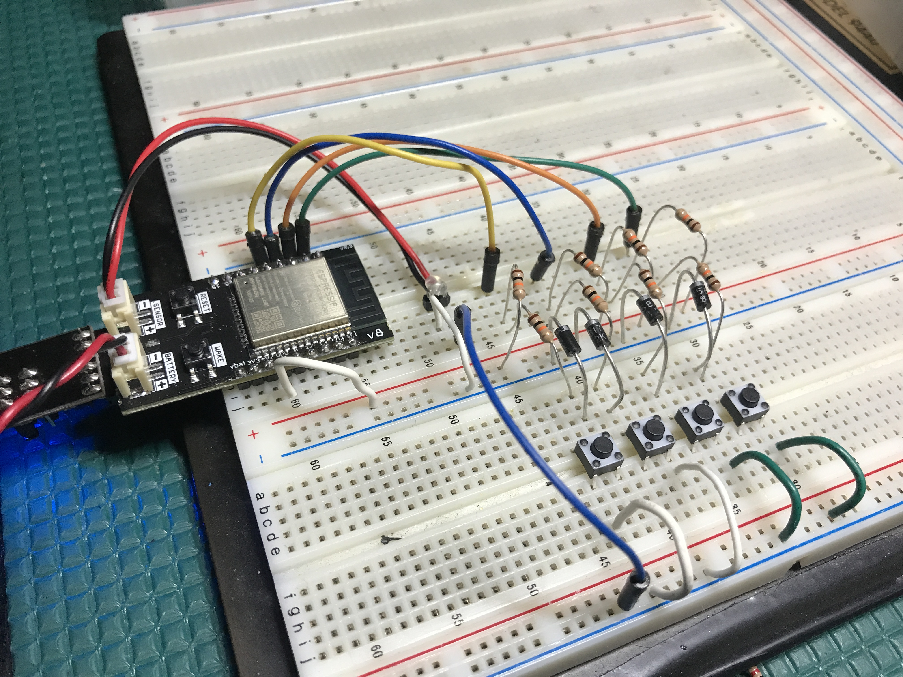
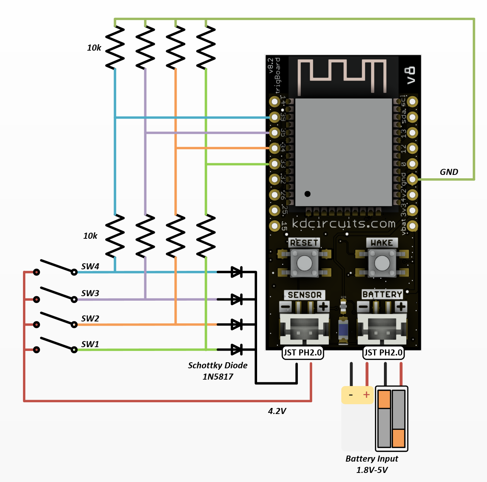
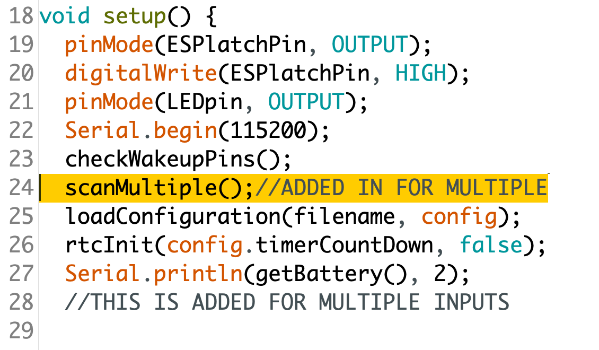
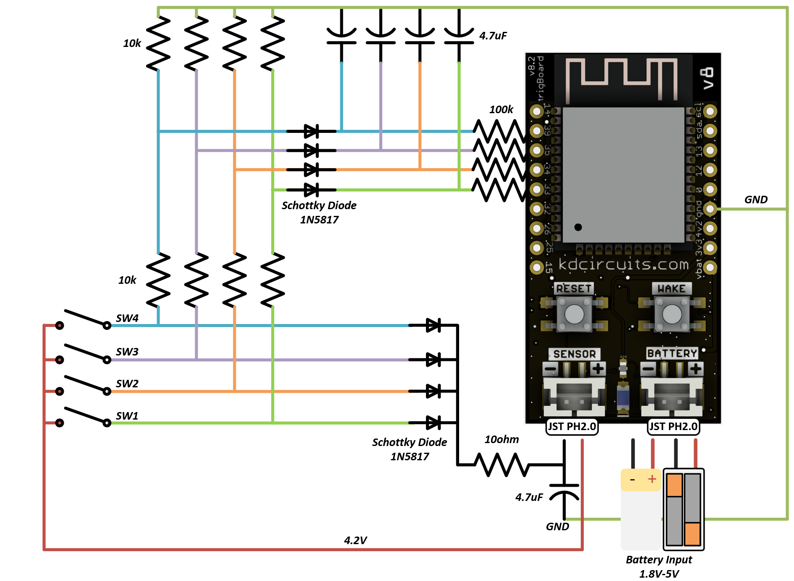

Multiple Inputs¶
Do you have multiple inputs to monitor? Something like a pushbutton control panel? This may be an option for you!
Hint
This example monitors 4 normally closed push buttons, but can be modified easily to meet your needs.
Warning
This example does not maintain low current if any of the contacts remains closed! Ideally, this would be for momentary events, since when all contacts remain in the open state, the standby current is ~1-2uA
Connections¶
Code¶
Theory of Operation¶
The idea here is simple, all of the switches there are “diode OR’ed” meaning if any of them close, the they will conduct through the diode to trigger the sensor input. But how to know which one triggered the wake? That’s the reason for the resistor dividers. Nice thing about the ESP32 is that there’s plenty of ADC pins, so just by dividing the 4.2V signal in half with x2 10k resistors, we can just scan the 4 pins and see which has a high ADC reading:
That simple scan code added over in its own tab:
void scanMultiple() {
if (analogRead(SW1_ADC_pin) > 100) {
strcpy(multiMessage, SW1_ID);
Serial.println("SW1 Detected");
}
if (analogRead(SW2_ADC_pin) > 100) {
strcpy(multiMessage, SW2_ID);
Serial.println("SW2 Detected");
}
if (analogRead(SW3_ADC_pin) > 100) {
strcpy(multiMessage, SW3_ID);
Serial.println("SW3 Detected");
}
if (analogRead(SW4_ADC_pin) > 100) {
strcpy(multiMessage, SW4_ID);
Serial.println("SW4 Detected");
}
}
The pins and messages are defined in the main file - can set those messages to anything, note max length is 10 char
const int SW1_ADC_pin = 33;
const int SW2_ADC_pin = 34;
const int SW3_ADC_pin = 35;
const int SW4_ADC_pin = 39;
const char SW1_ID[] = "SW1";
const char SW2_ID[] = "SW2";
const char SW3_ID[] = "SW3";
const char SW4_ID[] = "SW4";
So the scan tab will decide which message to use based on which is high, then in the logic tab, it will append this to the message as configured through the configurator.
And if using a cellular system with mp3 monitors, these messages can be used to indicate which mp3 to play:
const char SW1_ID[] = "SW1-15-";
const char SW2_ID[] = "SW2-16-";
const char SW3_ID[] = "SW3-17-";
const char SW4_ID[] = "SW4-18-";
For example:
Quick Press Connections¶
Since this could be for button inputs, sometimes these “presses” can be fast or a quick “tap”. The trigBoard needs the contact input to be closed/opened for at least 200ms in order to register. For doors/windows/etc… this doesn’t matter. This circuit adds in the delays needed to detect a quick press and also be able to read it in after wake:
